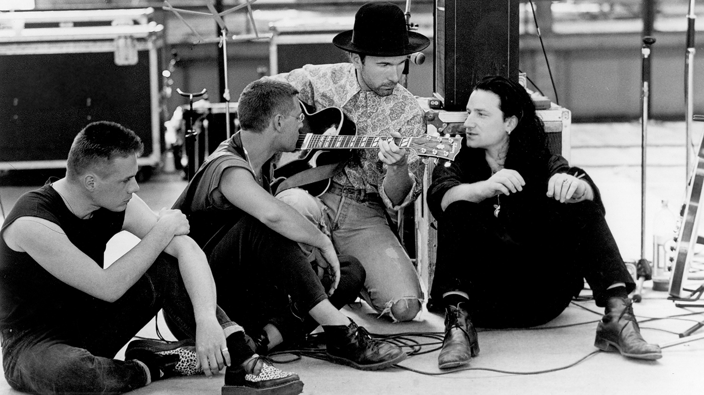

La band nasce dall’incontro tra Bono, The Edge, Adam Clayton e Larry Mullen Jr. . Gli U2 si formano nel 1976 a Dublino, in Irlanda, inizialmente come una band post-punk con influenze rock e new wave.
Il loro album di debutto, Boy (1980), ottiene un buon successo, ma é con il secondo album, October (1981), che gli U2 iniziano a farsi notare a livello internazionale. Con l’uscita di War (1983), il gruppo raggiunge il successo globale, grazie anche al singolo "Sunday Bloody Sunday", che diventa un inno di protesta contro la violenza in Irlanda del Nord.
Il successo planetario arriva con The Joshua Tree (1987), che contiene alcune delle loro canzoni piú iconiche, come "With or Without You", "I Still Haven’t Found What I’m Looking For" e "Where the Streets Have No Name". L’album consacra gli U2 come una delle band piú importanti della musica rock, spingendoli a un livello di fama globale che non ha piú abbandonato.
Negli anni '90, gli U2 continuano a evolversi con album come Achtung Baby (1991) e Zooropa (1993), che introducono sonoritá, piú elettroniche e sperimentali. L’album Pop (1997) segna una fase di rinnovamento, ma nonostante le difficoltá, gli U2 restano una delle band piú influenti della scena musicale internazionale.
Nei decenni successivi, album come All That You Can’t Leave Behind (2000), How to Dismantle an Atomic Bomb (2004) e No Line on the Horizon (2009) confermano la loro posizione di leggende del rock. Nel 2014, pubblicano Songs of Innocence, un album che esplora i loro inizi musicali e la loro evoluzione personale e politica.
Con oltre 150 milioni di dischi venduti, gli U2 sono una delle band piú e influenti di tutti i tempi. Il loro sound innovativo, le liriche profondamente politiche e personali, e le performance epiche continuano a conquistare il pubblico in tutto il mondo, dimostrando che il loro impatto sulla musica e sulla cultura globale é tutt’altro che finito.